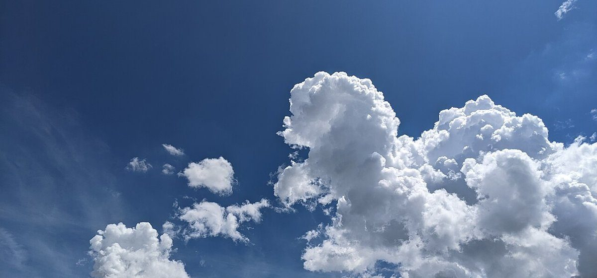

口コミ
以下は、実際のお客様の声ではありません。このページの見え方を示すための、制作側によるイメージ例です。
- イメージ例
一度、ゆっくり立ち寄ってみたいなと思います。

- イメージ例
どんなお店なのか、ページで分かったらうれしいな。

- イメージ例
営業時間や場所がすぐ分かるページだったら、友人にも教えたいと思います。
実際のお客様の声の掲載は、ご相談ください(準備中)
掲載写真はフリー素材のイメージです。店舗の実際の様子ではありません。日本国内とは限らず、他地域・海外で撮影された写真や撮影地が不明な写真を含みます。